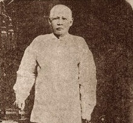

The Mercado Family
The Rizals is considered one of the biggest families during their time. Domingo Lam-co, the family’s paternal ascendant was a full-blooded Chinese who came to the Philippines from Amoy, China in the closing years of the 17th century and married a Chinese half-breed by the name of Ines de la Rosa. Researchers revealed that the Mercado-Rizal family had also traces of Japanese, Spanish, Malay and Even Negrito blood aside from Chinese. Jose Rizal came from a 13-member family consisting of his parents, Francisco Mercado II and Teodora Alonso Realonda, and nine sisters and one brother.

Teodora Alonso Realonda

Francisco Engracio Rizal
Francisco Engracio Rizal
Mercado y Alejandro

Saturnina Rizal
Mercado de Hidalgo

Narcisa Alonso Rizal
Mercado

Lucia Mercado Rizal –
Herbosa

José Protacio Rizal
Mercado y Alonso
Realonda

Josefa Mercado

Soledad Mercado
Realonda Rizal

Paciano Rizal
Mercado y Alonso
Realonda

Olympia Rizal
Mercado

Maria Mercado
Realonda Riza

Concepcion Alonso
Mercado Rizal